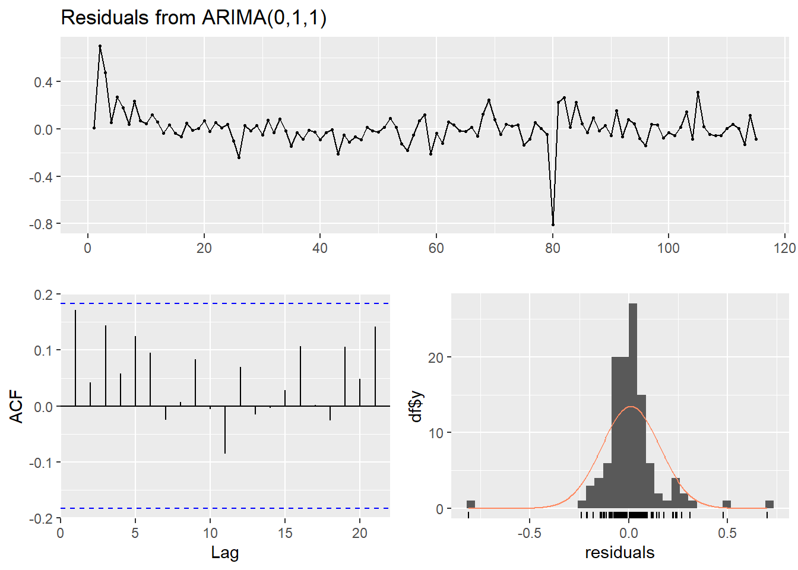

Capítulo 5 Metodología Box-Jenkins y Modelos ARIMA
5.1 Modelo ARIMA
Los modelos autorregresivos integrados de media móvil (ARIMA, por sus siglas en inglés: AutoRegressive Integrated Moving Average) combinan tres componentes:
AR (Autorregresivo): la serie se explica por sus propios valores pasados.
I (Integrado): se aplican diferenciaciones a la serie para hacerla estacionaria.
MA (Media móvil): se modela el error como una combinación lineal de errores pasados.
Un modelo ARIMA se denota como ARIMA(p, d, q), donde:
p: número de términos autorregresivos (AR).
d: número de diferenciaciones necesarias para hacer la serie estacionaria.
q: número de términos de medias móviles (MA).
Estos modelos permiten describir y pronosticar el comportamiento de una serie de tiempo a partir de sus valores y errores pasados (Hurtado Garzón 2013).
5.2 Metodología Box-Jenkins
La metodología Box-Jenkins es un enfoque sistemático que permite identificar, estimar y validar modelos ARMA o ARIMA que se ajusten adecuadamente a una serie de tiempo. Esta metodología consta de cuatro etapas principales:
- Identificación del modelo En esta etapa se analiza si la serie es estacionaria. Si no lo es, se aplican transformaciones (como la diferenciación) para lograr la estacionariedad. A continuación, se identifican los posibles valores de los parámetros del modelo ARIMA(p, d, q), con base en el análisis gráfico y estadístico.
Actividades comunes:
Análisis gráfico: para detectar tendencia, estacionalidad o cambios en la media.
Prueba de estacionariedad: como la prueba de Dickey-Fuller, que evalúa si la serie tiene raíz unitaria.
Diferenciación: si la serie no es estacionaria, se aplica una o más veces para lograr la estacionariedad y determinar el parámetro d.
Revisión de ACF y PACF:
ACF (autocorrelación): ayuda a identificar el orden q (media móvil).
PACF (autocorrelación parcial): permite sugerir el orden p (autorregresivo).
- Estimación de parámetros Una vez identificado el modelo, se ajusta a los datos para estimar sus parámetros.
Actividades:
Estimar los coeficientes mediante métodos como máxima verosimilitud.
Evaluar la significancia estadística de los parámetros.
Comparar modelos alternativos utilizando criterios como:
AIC (Criterio de Información de Akaike)
BIC (Criterio de Información Bayesiano)
RMSE (Raíz del error cuadrático medio)
- Verificación del modelo Se valida que los residuos del modelo se comporten como ruido blanco, es decir, que no presenten autocorrelación y tengan media cero y varianza constante.
Actividades:
Analizar los residuos en el tiempo.
Revisar los gráficos de ACF y PACF de los residuos.
Verificar la normalidad mediante histogramas o pruebas como Shapiro-Wilk.
Verificar independencia mediante pruebas como Ljung-Box.
Si los supuestos no se cumplen, se debe reconsiderar el modelo y repetir las etapas anteriores.
- Pronóstico Una vez validado el modelo, se procede a generar pronósticos a corto, mediano o largo plazo.
Actividades:
Generar predicciones con intervalos de confianza.
Comparar los pronósticos con datos reales (si están disponibles).
Evaluar la precisión del modelo predictivo.
Cabe resaltar que actualmente se dispone de la librería forecast en R, la cual incluye la función auto.arima, que permite seleccionar automáticamente los parámetros del modelo ARIMA de forma eficiente. Este procedimiento se basa en criterios estadísticos como AIC o BIC para identificar la combinación óptima de parámetros (p,d,q).
Gracias a esta automatización, se simplifican varios pasos tradicionales del proceso de modelado, como la inspección visual de los gráficos ACF y PACF, la identificación manual del grado de diferenciación d, y la evaluación de múltiples combinaciones de parámetros para encontrar el mejor modelo.
Por tanto, en esta etapa nos enfocaremos únicamente en la validación de los supuestos del modelo sobre los residuos y en la evaluación del desempeño de los pronósticos (Hurtado Garzón 2013).
5.3 Modelado
## Series: serie_train
## ARIMA(0,1,1)
##
## Coefficients:
## ma1
## -0.6841
## s.e. 0.0832
##
## sigma^2 = 0.02199: log likelihood = 56.02
## AIC=-108.03 AICc=-107.92 BIC=-102.56
##
## Training set error measures:
## ME RMSE MAE MPE MAPE MASE ACF1
## Training set 0.009698851 0.1469836 0.08909622 0.09432069 1.076615 0.8349203 0.171431El modelo seleccionado automáticamente mediante la función auto.arima fue un ARIMA(0,1,1). Esto indica que la serie requirió una diferenciación (d=1) para alcanzar la estacionariedad. Además, el modelo no incluye términos autoregresivos (p=0) y cuenta únicamente con un componente de media móvil (q=1), lo cual sugiere que la dinámica de la serie puede ser capturada eficazmente mediante un modelo de tipo MA(1) aplicado a los datos diferenciados.
5.4 Validacion de Supuestos sobre los Residuos
##
## ARCH LM-test; Null hypothesis: no ARCH effects
##
## data: residuals(modelo_arima)
## Chi-squared = 1.9992, df = 12, p-value = 0.9994
##
## Ljung-Box test
##
## data: Residuals from ARIMA(0,1,1)
## Q* = 10.599, df = 9, p-value = 0.3042
##
## Model df: 1. Total lags used: 10## [1] 0.009698851##
## Shapiro-Wilk normality test
##
## data: residuosarima
## W = 0.81165, p-value = 7.981e-11Se observa que los residuos del modelo presentan una media cercana a cero, lo cual es deseable. Además, cumplen con el supuesto de independencia, confirmado mediante la prueba de Ljung-Box (p = 0.3612), y presentan varianza constante, según los resultados de la prueba ARCH LM. No obstante, los residuos no siguen una distribución normal, como lo indica la prueba de normalidad de Shapiro-Wilk. Esta falta de normalidad no invalida el modelo para propósitos de pronóstico, pero sí requiere precaución al realizar inferencias estadísticas, especialmente aquellas que dependen fuertemente del supuesto de normalidad.
5.5 Pronosticos
## Point Forecast Lo 80 Hi 80 Lo 95 Hi 95
## 116 8.252085 8.062058 8.442112 7.961464 8.542706
## 117 8.252085 8.052801 8.451369 7.947306 8.556864
## 118 8.252085 8.043955 8.460215 7.933777 8.570393
## 119 8.252085 8.035470 8.468700 7.920800 8.583369
## 120 8.252085 8.027305 8.476865 7.908313 8.595857